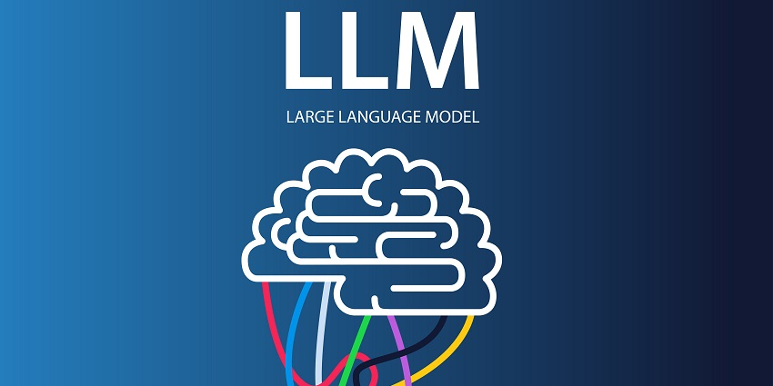

Data Science Projects
Deep Learning

This project involves developing a Happy/Sad Face Classifier using Convolutional Neural Networks (CNNs). It includes data collection, preprocessing, and the creation of a deep learning model using TensorFlow and Keras. The model is trained to distinguish between happy and sad faces and is deployed as a Flask-based web interface, allowing users to upload images for real-time emotion classification. The project aims to showcase the integration of computer vision, deep learning, and web development, making it a versatile tool for emotion analysis in images.
DEMO
Generative AI LLMs
In this project, the Falcon-7B Large Language Model (LLM) is employed, utilizing Langchain for prompt tuning and incorporating Parameter-Efficient Fine-Tuning (PEFT) techniques. These innovations empower creative text generation capabilities, all accessible through a user-friendly Streamlit-based interface, offering a fascinating journey into the world of generative AI..
Web Scraping
In this web scraping project, I utilized web scraping techniques to extract data from LinkedIn, employing tools such as Selenium and Beautiful Soup. This data extraction process serves various purposes, including sentiment analysis and error detection, enabling valuable insights and improved functionality for diverse applications.
US Housing Model
For the task of explaining how factors influence US home prices using 20 years of historical data and the S&P Case-Schiller Home Price Index, a Time Series Analysis coupled with Multiple Linear Regression would be well-suited. Time series analysis captures temporal trends, and linear regression helps quantify the impact of various factors. Advanced techniques can be explored if needed. Remember to preprocess data, create relevant features, and validate your model.